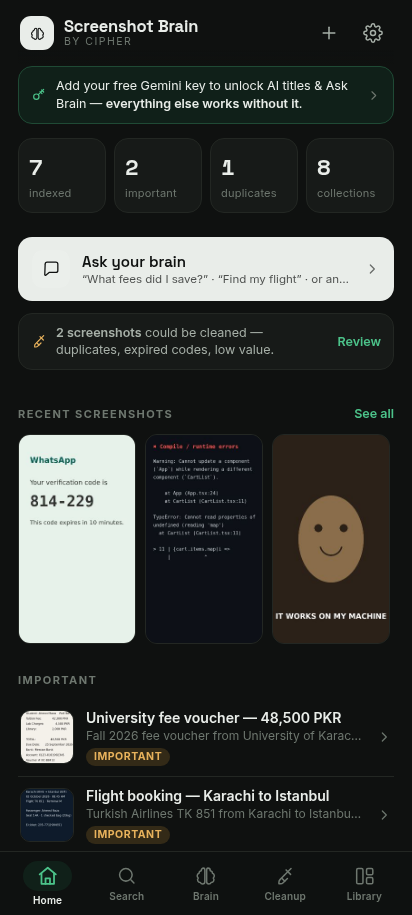
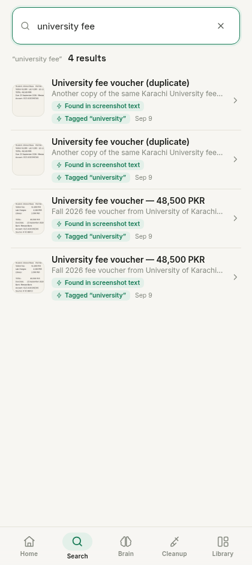
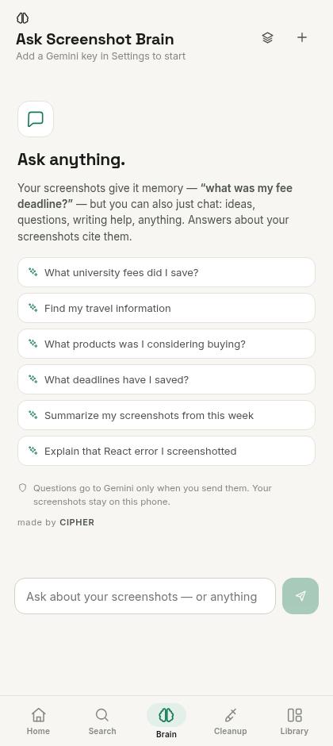
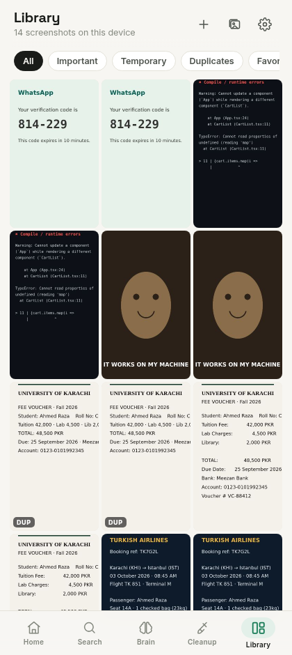
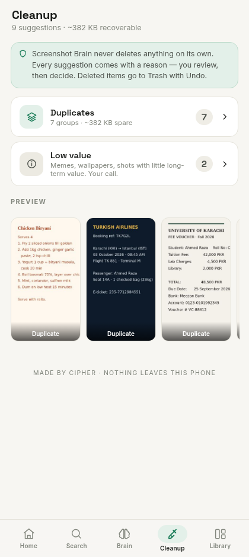
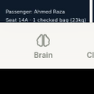
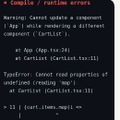

Your screenshots
remember everything.
Now you can too.
Screenshot Brain turns forgotten screenshots into searchable personal memory using OCR, smart organization, AI-powered search, and grounded screenshot chat.
Latest release: v1.2.0 · Android 7.0+ · no account, no sign-up. Android may ask you to allow installation from your browser, because the app is distributed directly via GitHub Releases rather than Google Play.
The app
Real screens, not concepts.
Everything below is captured from the actual application.





Captured from Screenshot Brain v1.1.0 with the built-in demo library.
Deep dive
Every screenshot, understood.
- OCR text — read on-device by ML Kit, fully offline, searchable instantly.
- AI summary and tags — a plain-language description of what the screenshot actually is.
- Detected details — dates, deadlines, people, organizations, prices, places and tasks.
- Importance score — from 0 to 100, so what matters rises to the top.
- Related screenshots — similar and same-topic shots, one tap away.
Features
Built for the way you actually save things.
Search by meaning
Ask in your own words — "receipt from last week", "product under Rs 5000", "that React error". OCR text, semantic matching, categories, tags and dates all work together, and every result explains why it matched.
Chat with your screenshots
Grounded AI chat about your own library. Answers cite the exact screenshots they came from — and general questions work too, beyond your library.
OCR-powered understanding
ML Kit reads the text inside every screenshot on your phone — offline, accurate, and never uploaded for recognition.
AI summaries & organization
Each screenshot gets a title, a short summary, a category and tags — so a wall of images becomes a library you can actually browse.
Smart collections
Screenshots are grouped into University, Travel, Receipts, Job Applications, Development Errors and more — automatically, plus your own collections.
Duplicate detection
Exact and near-duplicates are matched with a similarity percentage, grouped together, and paired with a recommendation for which copy to keep.
Safe cleanup
Duplicates, blurred shots, expired codes and low-value screenshots are surfaced with reasons and estimated space savings. Nothing is ever deleted automatically — deletions go to Trash with Undo.
Privacy controls
Biometric or PIN app lock, blur protection for sensitive screenshots, and per-screenshot "Exclude from AI" — you decide what cloud AI can ever see.
Brain
Chat with your screenshot memory.
The Brain is a personal assistant for your library. Ask in plain language — it reads your screenshots' OCR text and AI metadata, then answers with numbered source citations linking to the exact screenshots it used.
Questions it can answer:
And it goes beyond search:
- Summarize this week's screenshots
- Compare two screenshots side by side
- Explain the error you screenshotted — or anything else
If your library doesn't contain enough information, the Brain says so instead of guessing. Chats are saved on this device — start new chats, rename, revisit or delete them anytime.
How a grounded answer looks
You saved your University of Karachi fee voucher for Fall 2026 — a total of 48,500 PKR (tuition 42,000 + lab 4,500 + library 2,000), due 25 September at Meezan Bank 12. The voucher is for student Ahmed Raza, and you have 2 duplicate copies of it 3.
Sources

[2] University fee voucher (copy) · Sep 9
[3] Fee voucher duplicate · Sep 9Illustrative example. In the app, tapping a source opens the actual screenshot.
How it works
Five steps between clutter and memory.
Pick them from the gallery, scan your Screenshots folder, or share them straight from any app. Everything is indexed locally.
ML Kit reads the text on-device, offline — every word becomes searchable, from fee amounts to flight numbers.
Categories, tags and metadata turn the pile into a library — smart collections build themselves as your library grows.
Ask the way you remember: "receipt from last week". Or ask the Brain a question and get a cited answer.
Cleanup suggestions come with reasons and space estimates. You review and confirm — nothing is ever deleted on its own.
Privacy
What happens on your phone — and what never leaves it.
Screenshot Brain is a local app. There are no servers, no accounts and no analytics. The one honest exception: optional AI features call Google's Gemini API directly from your device, with your own key — and we say exactly what that sends.
Stays local, always
- Your screenshot library and its local database
- OCR — ML Kit runs fully offline, images never uploaded for recognition
- Search index, categories, tags and smart collections
- Duplicate, blur and importance analysis
- Chat history, your Gemini key, your PIN
Cloud AI — only when you choose
- Used for AI titles, summaries, tags and Brain chat — never for core features
- Sends a downscaled image during import; Brain chat sends text excerpts, not full images
- Any screenshot marked "Exclude from AI" is never sent
- Requests go from your device to Gemini with your own key — no middleman server
Screenshots are never automatically deleted. Cleanup only suggests; deleting moves shots to Trash with Undo, and emptying Trash requires an explicit confirmation.
No "100% on-device AI" claims. OCR, search and organization are on-device; the AI chat and summaries use Google's cloud Gemini API and are clearly labeled as such in the app.
Extra controls: biometric or PIN app lock, blur protection for sensitive screenshots, and per-screenshot exclusion from AI.
Download
Screenshot Brain for Android
Grab the latest APK, import a few screenshots, and ask them something you forgot.
ScreenshotBrain-v1.2.0.apk · signed release build. Android may ask you to allow installation from your browser — that's normal for apps distributed outside Google Play. The APK is served directly from GitHub Releases, so this button always points at the latest verified build.
Open source
Read every line before you trust it with your screenshots.
Screenshot Brain is MIT-licensed and developed in the open. The repository contains the full source — app, native Android layer, tests, and build pipeline — plus honest documentation of the architecture and the privacy model.
Architecture
A React + TypeScript UI runs inside a Capacitor shell on Android. A native plugin layer handles ML Kit OCR, screenshot importing and biometric unlock. The library lives in a local IndexedDB store with thumbnails and a perceptual-hash index, and the Gemini client talks to Google's API directly from the device.
Technology stack
Only what the app actually uses:
Privacy model
Documented in the README and in the app's Privacy page: what is local, what is cloud, and what is sent when. No telemetry, no crash reporting, no analytics SDKs — the app makes zero network calls unless you use an AI feature with your own key.
FAQ
Questions people actually ask.
What is Screenshot Brain?
A free, open-source Android app that turns the screenshots piling up on your phone into searchable personal memory. It reads the text inside every screenshot (OCR), organizes them with categories, tags and smart collections, lets you search in plain language, and adds a grounded AI chat that answers questions about your library with source citations.
Does it upload my screenshots?
Your library lives in the app's local storage on your phone. The only time content leaves the device is when you use an AI feature: those call Google's Gemini API directly from your phone with your own API key — a downscaled image is sent during import for titling, and Brain chat sends text excerpts of relevant screenshots rather than full images. Any screenshot you mark "Exclude from AI" is never sent, and without a key nothing is uploaded at all.
Does the app work offline?
Yes — the core is fully offline: OCR (on-device ML Kit), search, library, timeline, collections, cleanup analysis and duplicate detection all work without internet. AI features are cloud-based and show a clear offline/unavailable state when there's no connection.
Does it automatically delete screenshots?
Never. Cleanup only makes suggestions — each one with a reason and an estimated space saving. You review and decide; deletions go to Trash with Undo, and emptying the Trash requires an explicit confirmation. Your phone's original gallery files are never touched.
How does AI chat work?
You ask a question in plain language; the app finds the most relevant screenshots using OCR text and metadata, sends those text excerpts to Google's Gemini API with your question, and renders the answer with numbered source citations. Tapping a source opens the actual screenshot. If your library doesn't contain enough information, the Brain says so rather than guessing. General questions that don't need your library work too.
Which Android versions are supported?
Android 7.0 (API 24) and above — including modern photo permissions on Android 13+ and partial gallery access on Android 14+.
Where can I download the latest APK?
Right here — the Download section above always points at the latest signed release on GitHub Releases (the button fetches the newest published APK automatically). You can also browse all releases at github.com/iamcipherdev/screenshot-brain/releases. Since the app is distributed outside Google Play, Android may ask you to allow installation from your browser.
Is the project open source?
Yes, MIT-licensed. The full source code, architecture notes, privacy model and build instructions are on GitHub at github.com/iamcipherdev/screenshot-brain.